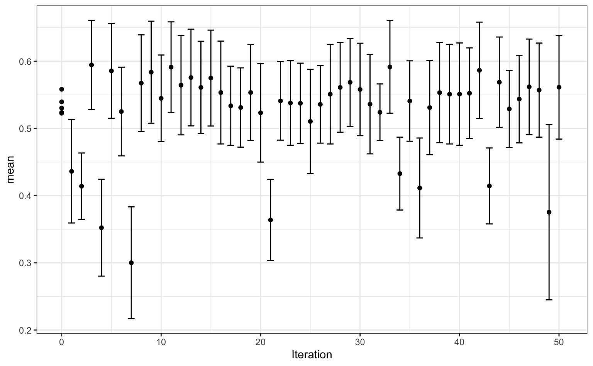

Classification.RmdThe cell segmentation data from Hill, LaPan, Li and Haney (2007) will be used to demonstrate tuning for a classification model. For these data, the predictors are aspects of cells (like size, shape, etc.). These cells are measured using image analysis and manual curation of the cells are used to determine if the boundaries of the cells were adequately captured. The outcome is either poorly segmented (PS) or well segmented (WS). The point of the analysis is to predict whether future cells were properly delineated. The predictors tend to be highly correlated.
After first loading the data set, we remove indicators for the cell identifier, the original author’s training/test allocation, and two predictors that are scientifically unimportant. A new training/test split is created and a scheme for 10-fold cross-validation is also created.
library(tidymodels)
library(workflows)
library(tune)
library(kernlab)
# Load data
load(url("http://bit.ly/seg-data"))
segmentationData <-
segmentationData %>%
select(-Case, -Cell, -contains("Centroid"))
set.seed(8567)
tr_te_split <- initial_split(segmentationData)
seg_train <- training(tr_te_split)
seg_test <- testing(tr_te_split)
set.seed(5121)
folds <- vfold_cv(seg_train)Since the predictors are highly correlated, we can used a recipe to convert the original predictors to principal component scores. There is also slight class imbalance in these data; about 64% of the data are poorly segmented. To mitigate this, the data will be down-sampled at the end of the pre-processing such that the number of poorly and well segmented cells occur with equal frequency. A recipe will be used to process the data. However, the number of principal components will need to be tuned so that we have enough (but not too many) representations of the data.
seg_pre_proc <-
recipe(Class ~ ., data = seg_train) %>%
step_YeoJohnson(all_predictors()) %>%
step_normalize(all_predictors()) %>%
step_pca(all_predictors(), num_comp = tune()) %>%
step_downsample(Class)Like the original analysis, a support vector machine will be used to model the data. A radial basis function (RBF) kernel will be used and its main parameter (\(\sigma\)) will be tuned. Additionally, the main SVM parameter, the cost value, also needs optimization.
svm_mod <-
svm_rbf(mode = "classification", cost = tune(), rbf_sigma = tune()) %>%
set_engine("kernlab")These two objects will be combined into a single object via the workflows package and this object will be used to fuel the optimization process.
From this object, we can derive information about what parameters are slated to be tuned. A parameter set is derived:
svm_set <- param_set(svm_wflow)
svm_set
#> Collection of 3 parameters for tuning
#>
#> Recipe parameters needing finalization:
#> # Components ('num_comp')
#>
#> See `?dials::finalize` for more information.The note about finalization occurs because the potential range for the number of principal components is determined by the number of predictors. For that reason, the parameter cannot be automatically initialized. A member of the parameter set can be modified using the update() function. Let’s constrain the search to one to twenty components:
Bayesian optimization is a sequential method that uses a model to predict new candidate parameters for assessment. When scoring potential parameter value, the mean and variance of performance are predicted. The strategy used to define how these two statistical quantities are used is defined by an acquisition function.
For example, one approach for scoring new candidates is to use a confidence bound. Suppose accuracy is being optimized. For a metric that we want to maximize, a lower confidence bound can be used. The multiplier on the standard error (denoted as \(\kappa\)) is a value that can be used to make trade-offs between exploration and exploitation.
exploration means that the search will consider candidates in untested space
exploitation focuses in areas where the previous best results occurred.
The variance predicted by the Bayesian model is mostly spatial variation; the value will be large for candidate values that are not close to values that have already been evaluated. If the standard error multiplier is high, the search process will be more likely to avoid areas without candidate values in the vicinity.
We’ll use another acquisition function, expected improvement, that calculates the determines which candidates likely to to be helpful relative to the current best results.
set.seed(243)
search_res <-
tune_Bayes(
svm_wflow,
rs = folds,
# To use non-default parameter ranges
param_info = svm_set,
# Generate five at semi-random to start
initial = 5,
iter = 50,
# How to measure performance
perf = metric_set(kap),
# Acquisition function
objective = exp_improve(),
control = Bayes_control(random_value = Inf)
)
search_res
#> # A tibble: 55 x 9
#> cost rbf_sigma num_comp .metric .estimator mean n std_err .iter
#> <dbl> <dbl> <int> <chr> <chr> <dbl> <int> <dbl> <dbl>
#> 1 0.00206 3.96e- 6 12 kap binary 0.537 10 0.0277 0
#> 2 0.0108 2.62e- 3 18 kap binary 0.526 10 0.0310 0
#> 3 0.0147 7.65e- 7 12 kap binary 0.537 10 0.0277 0
#> 4 0.0747 5.44e-10 9 kap binary 0.244 10 0.0492 0
#> 5 0.166 9.59e- 1 2 kap binary 0.438 10 0.0350 0
#> 6 0.0234 6.90e- 2 11 kap binary 0.556 10 0.0373 1
#> 7 0.00153 6.61e- 7 1 kap binary 0.294 10 0.0229 2
#> 8 0.246 1.88e- 3 17 kap binary 0.539 10 0.0334 3
#> 9 0.00445 1.76e- 4 8 kap binary 0.533 10 0.0265 4
#> 10 0.0570 2.91e- 1 20 kap binary 0.383 10 0.0362 5
#> # … with 45 more rowsThe best performance of the initial set of candidate values was kappa = 0.537. The best results were achieved at iteration 50 with a corresponding Kappa value of 0.601. The five best results were:
search_res %>% arrange(desc(mean)) %>% slice(1:5)
#> # A tibble: 5 x 9
#> cost rbf_sigma num_comp .metric .estimator mean n std_err .iter
#> <dbl> <dbl> <int> <chr> <chr> <dbl> <int> <dbl> <dbl>
#> 1 0.451 0.168 8 kap binary 0.601 10 0.0319 50
#> 2 0.495 0.273 7 kap binary 0.600 10 0.0374 37
#> 3 0.443 0.156 7 kap binary 0.599 10 0.0396 21
#> 4 0.395 0.118 9 kap binary 0.589 10 0.0302 32
#> 5 0.184 0.0849 10 kap binary 0.588 10 0.0312 24A plot of the search can be created via:
